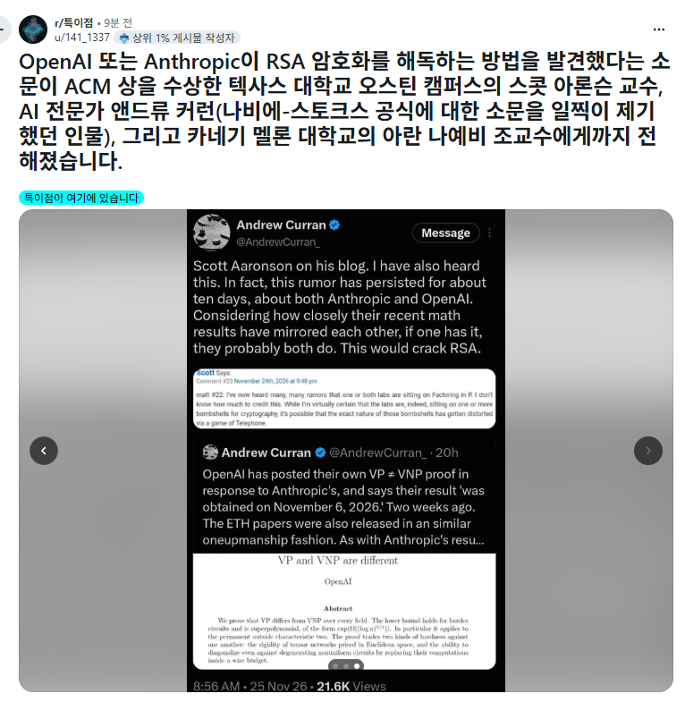

▶ 11월 24일, 유명 컴퓨터과학자인 UT Austin 스콧 애런슨 교수가 OpenAI와 앤트로픽 중 한 곳 또는 양쪽 모두가 RSA 암호를 위협할 수 있는 수학적 돌파구를 이미 확보했다는 소문을 여러 차례 들었다고 밝힘.
▶ 소문의 핵심은 'Factoring in P'. 지금까지 매우 어려웠던 거대한 숫자의 소인수분해를 훨씬 빠르게 처리할 수 있다는 것임.
▶ AI 소식통 앤드루 커런도 약 10일 전부터 양사에 관한 동일한 소문을 들었다고 주장함. 최근 두 회사가 비슷한 수학 난제를 연달아 해결한 만큼 둘 다 해당 기술을 확보했을 가능성을 제기함.
▶ 애런슨은 정확한 내용을 확신할 수는 없지만, 양사가 암호학계를 뒤흔들 만한 연구 성과를 하나 이상 숨겨두고 있을 가능성은 거의 확실하다고 생각한다고 밝힘.
▶ 현재 실제 증명이나 해독 시연은 공개되지 않았으며, RSA를 실용적으로 무너뜨릴 수 있는지도 확인되지 않음.
한 줄 요약: OpenAI와 앤트로픽이 세계적으로 사용되는 RSA 암호를 무너뜨릴 수 있는 기술을 이미 확보했을지도 모른다는 소문이 수학계에서 확산 중임.
RSA 암호화 = 소인수분해 기반 암호 알고리즘
현대 컴퓨터보안의 근간임. 보안업계에서 미친듯이 경보 울릴 듯
ㅈ됐네